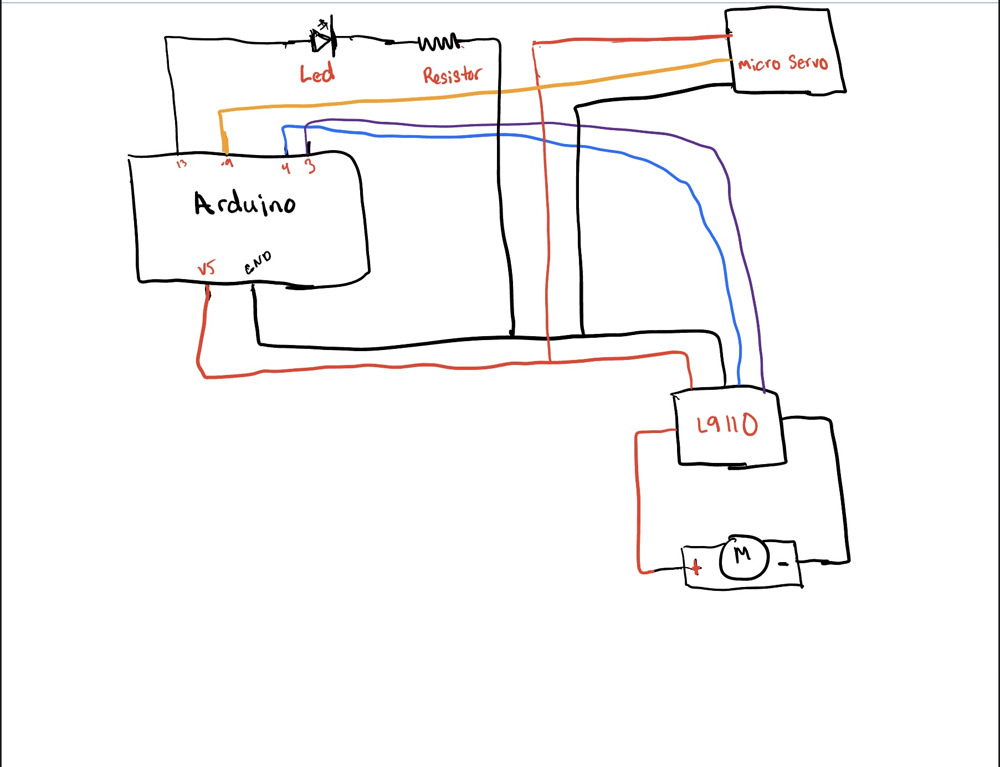

<br>
#### Week 3: Microcontroller Programming
This week was an introduction to microcontroller programming.
I decided to build off my previous assignment, which was the Marching Machine project. My goal for this project was to program my Marching Machine to move for a certain amount of time and reverse as well.
<img src="band.gif" alt="this band moves" width="250" />
I had to first learn how to us an Arduino board in order to be able to program it. I was able to quickly learn how to program it with the help of the website listed below.
<li>Arduino Projects Book (here)
<li>Arduino Tutorial 1 (here )
<li>Microcontroller Programming (here)
I thought it would be a good idea to sketch out the circuit on my iPad because I wasn't sure where to begin. I originally intended to complete my project with just an Arduino and a motor, but I felt that would be boring. So, to add some pizzazz, I added an LED and other nice components to my circuit to get more practice utilizing them.
Picture of circuit

This was my first time using different elements to program a motor to run by itself. By drawing the circuit, I was able to see what material I would need to program my marching machine. I felt more confident that I could make it work!
The material I use included:
Arduino board
Led
1 100hz Resistor
Micro Sero
L9110
Motor
Cable cords
I decided to build a circuit using a Led, Micro Sero, and L9110 in order to make my marching machine more interesting. I uploaded the code for utilizing Multi-tasking for Arduino by following the instructions on this page. Additionally, I developed a class in my code for the motor and utilized an if/else statement to control how long it marches in one direction and when to change directions in order to accomplish my aim of making it more fourth for a predetermined length of time.
Here is my code down below.
<img src="IMG_5146.png" alt="Image of SKoflc1" style="width:300px;height:400px;">
<img src="IMG_5149.png" alt="Image of IMG_5149" style="width:300px;height:400px;">
##"The Marching Machine Circuit"
By Shekinah Newson
<video width="500px" height="500px" controls>
<source src="week5vid.mp4" type="video/mp4">
</video>